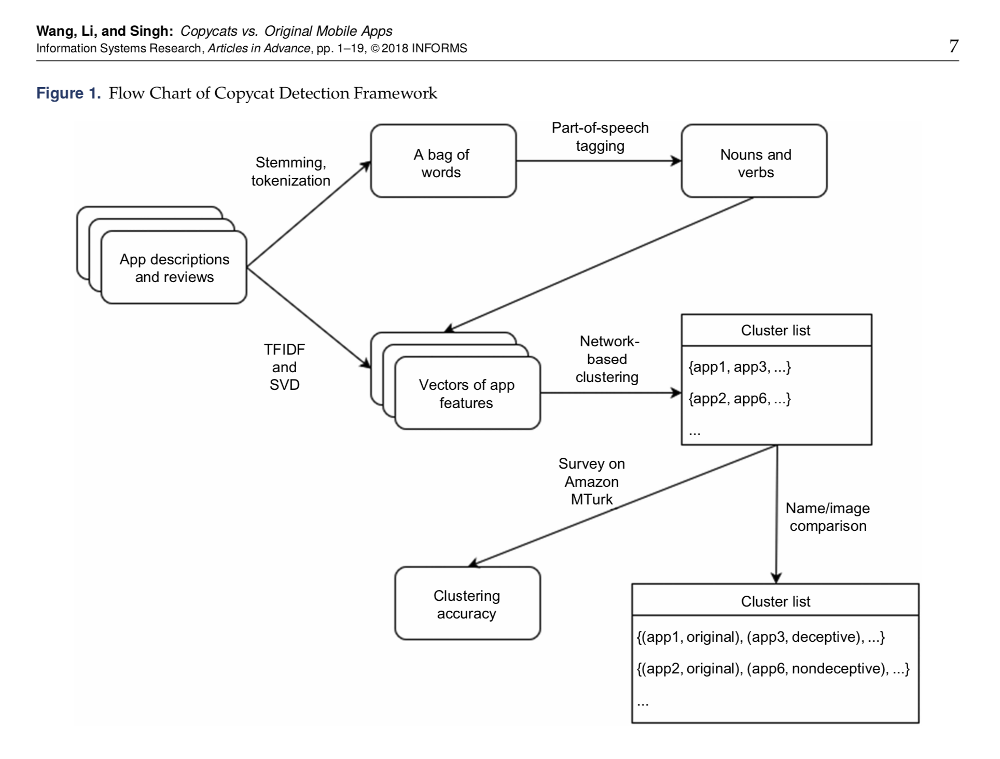
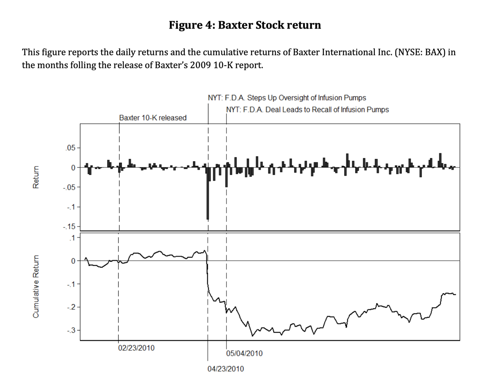
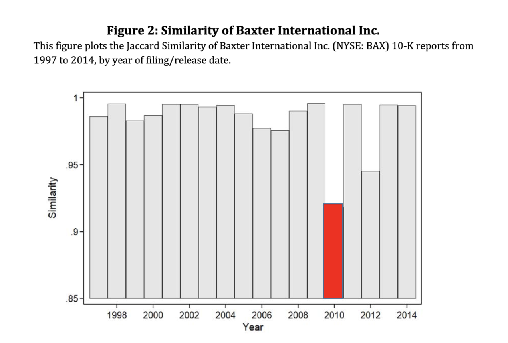

在大数据的今天，通过互联网超文本链接，无数的个人、团体、公司、政府等不同组织形态的主体均深深嵌入到互联网世界，在网络世界中留下了大量的文本。社会、管理、经济、营销、金融等不同学科，均可以研究网络上海量的文本，扩宽的研究对象和研究领域。下面大部分内容是三份文档翻译汇总而来，我觉得讲的挺明白的，其中加入了我的一点点理解和扩充。
一、文本产生及其作用方式
- How text reflects its producer？
- How text impacts its receiver？
graph LR
Text_Producer --> Text
Text --> Text_Receiver
Text_Receiver -->Text
Text --> Text_Producer
文本信息的==生产者producer== 与 ==消费者receiver==，涵盖 ==个人、公司(组织)、国家(社会)==三个层面。
graph LR
Consumers --> Firms
Consumers --> Investors
Consumers --> Society
Firms --> Consumers
Firms --> Investors
Investors --> Firms
Investors --> Society
Firms --> Society
Society --> Investors
Society --> Consumers

需要注意的是文本的==反映Reflects==和==影响Impacts==并不是非此即彼，往往会同时起作用。
| — | 研究目的 | 自变量 | 因变量 | 因变量 |
|---|---|---|---|---|
| Reflects | 文本可以反映producer的一些信息，帮助研究者理解producer。 例如试图挖掘producer的个性personality或属于什么社会团体。 |
了解公司的品牌个性； 年报也会有未来业绩表现的有价值线索； 消费者们在品牌社区的言语能更深的投射出消费者对品牌的态度； 而更宏大的层面，文本也能反映出文化差异。 了解消费者是否喜欢新产品，消费者如何看待品牌，消费者最看重什么 |
文本 | 文本 |
| Affects | 知道文本如何影响receiver，receiver会有什么样的行为和选择。 | 检验文本是否以及如何导致消费者诸如购买、分享和卷入行为。 广告会塑造消费者的消费行为 消费者杂志会扭曲消费者产品分类感知 电影剧本会影响观众的反应 |
文本消费者 | 文本消费者 |
二、如何使用文本数据
| — | Reflects | Affects | 目的 | 应用 | 难点 |
|---|---|---|---|---|---|
| Predict | 预测 producer的状态、特性、性格等 | 预测 receiver阅读、分享和购买行为 | 研究人员不怎么关系任意的文本特质，他们更关心预测的表现。 | 什么消费者最喜欢贷款; 什么电影会大火; 未来股市走向; |
文本数据可以生成成千上万的特征(相当于变量x1，x2…xn)，而文本数据记录数甚至可能少于特征数。 为了解决这个为题，使用新的特征分类方法，减少特征数量，又有可能存在拟合问题。 |
| Understanding | 为什么当人们压抑的时候会使用特殊人称。 | 来理解为何带有情绪的文本会更容易被阅读和分享 | 理解为什么事情发生以及如何发生的 这类研究往往会用到心理学、社会学的方法，旨在理解文本的什么特征会导致什么后续结果，以及为什么产生这样的后果。 |
消费者怎样表达会如何影响口碑; 为何某些推文会被挑中分享？ 歌曲为何变火？ 品牌如何让消费者忠诚？ |
找出观测数据背后的因果关系。相应的，该领域的工作可能会强调实验数据，以允许对关键的独立变量进行操作。 另一个挑战是解释文本特征之间的关系。 |
三、文本信息的指标
粗略的分，文本信息可以分为定性与定量两种类型
| 定性/量 | 分析方法 | 优点 | 缺点 |
|---|---|---|---|
| 定性（text as text） | 质性（扎根） | 依靠研究者领域知识，可以对少量的数据做出深刻洞见。 | 难以应对大规模数据； 编码过程并不能保证唯一； |
| 定量 textual data(text as data) | 明显的文本特征，如词频、可阅读性 | 标准如一; 适合大规模文本挖掘； 纷繁复杂中涌现出潜在规律 |
需要破坏文本的结构，丧失了部分信息量 |
早先的营销领域，如在线评论文本分析指标多为
- 数量，如文本长度(e.g., Godes and Mayzlin 2004; Moe and Trusov2011)
- **情感得分(效价，评论评分) **(e.g., Godes and Silva 2012; Moe and Schweidel 2012; Ying, Feinberg and Wedel 2006)·
- 方差，如信息墒(e.g., Godes and Mayzlin 2004).
然而如今这些指标经常忽略了文本的丰富度。以下几种是更好用的指标
| 指标 | 功能 | 补充 |
|---|---|---|
| 实体词词频 | 使用相应的实体词典，统计实体出现次数，这样可以对不同实体进行比较 | 更长的文本通常含有更多的实体(的数量)； 还有一个局限就是某些实体会比其他实体更多的出现，如“电脑”商品的在线评论中“电脑”出现次数会远多于其他词。 |
| 相似度 | 文档之间的相似度感兴趣。 如两个广告之间的相似程度如何？ 两首歌的歌词相似程度多少？ |
相似度的计算方法有 cos余弦相似 jaccard相似 |
| 可读性 | 同样的意思可以用不同的难度的词汇去表达，造成阅读的难易程度。可读性反映了作者的内容复杂度和读者的阅读难度。 | 常见的可读性算法有Flesch–Kincaid和the simple measure of gobbledygook (SMOG)。 可阅读性经常将得分设置到1-12分之间，在美国学校里阅读理解成绩水平得分就是1-12分。 |
四、文本分析步骤

| 序号 | 步骤 | 解释 | 中文 | 英文 |
|---|---|---|---|---|
| 1 | 读取数据 | 数据一般存储于不同的文件夹不同文件内，需要将其导入到计算机 | ||
| 2 | 分词 | 导入到计算的文本是字符串数据，需要整理为更好用的列表 | 例如“我爱你中国”分词后 得到[“我”, “爱”, “你”, “中国”] |
“I love China"分为 [“I”, “love”, “China”] |
| 3 | 剔除符号和无意义的停止词 | 为了降低计算机运行时间，对分析结果影响较小的字符，诸如符号和无意义的词语需要剔除掉 | 如“的”，“她”， ”呢”， “了” | “is” , “a”, “the” |
| 4 | 字母变小写，词干化 | 同义词归并，同主体词归并 | “中铁”，“中国铁建”，“中铁集团”都可以归并为“中铁” | 先变为小写，这样“I”和“i”都归并为“i”； “was”，“are”，“is”都归并为“be” |
| 5 | 构建文档词频矩阵 | 使用一定的编码方式，即用某种方式表示文本。常见的有词袋法、tf-idf； 可以使用scikit-learn构建文档词频矩阵，但中英文略有区别，需要注意 |
“我爱你中国”需要先整理为“我 爱 你 中国” | “I love China” |
五、文本分析技术对比

从左向右，自动化程度越来越高，人工介入的越来越少
| 技术 | 描述 | 优点 | 缺点 | 常被应用(领域) | 软件 |
|---|---|---|---|---|---|
| 主题分析Thematic analysis | 需要有经验的人员基于自身经验和李俊杰，对研究的数据进行挖掘。编码过程为迭代进行 | 使用参与者自己的话语或者构念来挖掘数据，对少量文本理解的更深入 | 属于时间、劳动密集型任务，不适合大规模数据。 由于不同的编码人员有不同的经历和偏好，编码过程的标准不可靠 |
社会学、管理学 | Nvivo； |
| 内容分析/基于字典方法 | 统计文本中词语/词组的出现频率 | 允许对研究的数据进行定量分析 | 采用的词典应尽量与研究问题适应，词典适配性问题突出 | 管理学 | LIWC、Nvivo、DICTION； |
| 词袋法（Bag of words） | 将文本字符串转为计算机能理解的数字化向量 | 编码标准稳定简单，具有统计学特性，扩展性强 | 编码过程忽略词语的先后顺序 | 管理学 | Python的scikit-learn、gensim、nltk等；R |
| 监督学习(Supervise models),如SVM、Bayes、Logistic Regression | 研究者要知道输入数据X和标签y；需要核实的模型需要X和y之间的关系和规律 | 允许事先定义编码规则(如选择词袋法还是tfidf)；逻辑简单 | 需要高质量的标注数据(工作量大)；you与特征词太多，训练的模型很容易过拟合。 | 计算机学、政治学、管理学 | Python的scikit-learn、gensim、nltk等；R（topicmodels， stm） |
| 无监督学习(Kmeans、 LDA话题模型) | 使用聚类、话题分析，让计算机自动对数据进行分组 | 在没有人工标注的情况下，加速了数据的“标注”或“分类” | “标注”是机器按照数字特征进行的分组，需要研究者解读才可以赋予“标准“意义；训练过程需要大量的调参 | 计算机学、政治学、管留学 | Python的scikit-learn、gensim、nltk等；R（topicmodels， stm） |
| 自然语言处理 | 按照人类对语言的理解进行建模，考虑词语顺序 | 计算机自动化；可分析语义 | 大多数模型是人类无法解读的黑箱； 虽然代码编程量小，但训练代码耗时巨大 |
计算科学；市场营销；心理学 | pytorch、tensorflow |
据被压缩成词组频数，定性的文本数据转化为定量的频数。本课程中会涉及到的内容
- Thematic Analysis 定性
- Content Analysis
- Dictionary
- Bag of words 词袋法
- Supervised ，监督学习 文本分类问题
- Unsupervised，如非监督LDA话题模型
- Natural language processing
应用案例
众筹融资成功率与语言风格的说服性-基于Kickstarter的实证研究
摘要：众筹融资效果决定着众筹平台的兴衰。 众筹行为很大程度上是由投资者的主观因素决定的，而影响主观判断的一个重要因素就是语言的说服性。 而这又是一种典型的用 户产生内容（UGC），项目发起者可以采用任意类型的语言风格对项目进行描述。 不同的语 言风格会改变投资者对项目前景的感知，进而影响他们的投资意愿。
首先，依据 Aristotle 修 辞三元组以及 Hovland 说服模型，采用扎根理论，将众筹项目的语言说服风格分为 5 类：诉诸可信、诉诸情感、诉诸逻辑、诉诸回报和诉诸夸张。
然后，==借助文本挖掘方法，构建说服风格语料库，并对项目摘要进行分类。==
最后，建立语言说服风格对项目筹资影响的计量模型，并 对 ==Kickstarter 平台上的 128345 个项目进行实证分析==。 总体来说，由于项目性质的差异，不同 的项目类别对应于不同的最佳说服风格。
关键词：众筹 融资 语言风格 说服性 投资意愿

Copycats vs. Original Mobile Apps
摘要: 尽管移动应用程序市场的增长为移动应用程序开发人员创新提供了巨大的市场机会和经济诱因，但它也不可避免地刺激了模仿者开发盗版软件。原始应用的从业人员和开发人员声称，模仿者窃取了原始应用的想法和潜在需求，并呼吁应用平台对此类模仿者采取行动。令人惊讶的是，很少有严格的研究来分析模仿者是否以及如何影响原始应用的需求。
==进行此类研究的主要威慑因素是缺乏一种客观的方法来识别应用程序是模仿者还是原创者。通过结合自然语言处理，潜在语义分析，基于网络的聚类和图像分析等机器学习技术，我们提出了一种将应用识别为原始或模仿者并检测两种模仿者的方法：欺骗性和非欺骗性。==
根据检测结果，我们进行了经济计量分析，以确定五年间在iOS App Store中发布的==5,141个开发人员的10,100个动作游戏应用程序==样本中，模仿应用程序对原始应用程序需求的影响。我们的结果表明，特定模仿者对原始应用需求的影响取决于模仿者的质量和欺骗程度。高质量的非欺骗性复制品会对原件产生负面影响。相比之下，低质量，欺骗性的模仿者正面影响了对原件的需求。
结果表明，从总体上讲，模仿者对原始移动应用程序需求的影响在统计上是微不足道的。==我们的研究通过提供一种识别模仿者的方法==，并提供模仿者对原始应用需求的影响的证据，为越来越多的移动应用消费文献做出了贡献。

LAZY PRICES
摘要: 使用1995年-2014年所有美国公司季度和年度申报的完整历史记录，研究发现当公司对报告进行积极更改时，这种行为蕴含着公司未来运营的重要信号。
财务报告的语言和结构的变化也对公司的未来收益产生重大影响：做空"变化"的公司（持有的公司，如果其报告发生变化的，做空该公司股票），买入“不变化”的公司，使用这样的投资组合策略，在2006年的每月alpha值高达1.88%的收益（每年超过22％）。报告中涉及执行官（CEO和CFO）团队的话语风格的变化，或者有关诉讼(风险部分)的话语的变化，都对投资的未来收益有重要作用。
研究发现，对10-K的变化可以预测未来的收益、获利能力、未来的新闻公告，甚至未来的公司破产。同时，不做任何变化的公司将获得显著的异常收益。与资产价格典型的反应不足研究不同，我们发现没有任何与这些变化相关的公告效应–仅在后来通过新闻，事件或收益披露信息时才产生回报–暗示投资者并未注意到整个公众领域的这些变化。

纽约时报在2010年4月23日发了一条FDA将有对输液泵(infusion pumps)更严格对审批管理规定的新闻，新闻中提到了Baxter公司。新闻公布当天，Baxter股价大跌。
10天后的（2010年5月4日），Baxter宣布召回问题的输液泵产品，股价当天再次大跌。

相关文献
[1]Berger, Jonah, Ashlee Humphreys, Stephan Ludwig, Wendy W. Moe, Oded Netzer, and David A. Schweidel. “Uniting the tribes: Using text for marketing insight.” Journal of Marketing (2019): 0022242919873106.
[2]Kenneth Benoit. July 16, 2019. “Text as Data: An Overview” Forthcoming in Cuirini, Luigi and Robert Franzese, eds. Handbook of Research Methods in Political Science and International Relations. Thousand Oaks: Sage.
[3]Banks, George C., Haley M. Woznyj, Ryan S. Wesslen, and Roxanne L. Ross. “A review of best practice recommendations for text analysis in R (and a user-friendly app).” Journal of Business and Psychology 33, no. 4 (2018): 445-459.
[4]王伟,陈伟,祝效国,王洪伟. 众筹融资成功率与语言风格的说服性-基于Kickstarter的实证研究.管理世界.2016;5:81-98.
[5]Wang, Quan, Beibei Li, and Param Vir Singh. “Copycats vs. original mobile apps: A machine learning copycat-detection method and empirical analysis.” Information Systems Research 29, no. 2 (2018): 273-291.
[6]Cohen, Lauren, Christopher Malloy, and Quoc Nguyen. “Lazy prices.” The Journal of Finance 75, no. 3 (2020): 1371-1415.